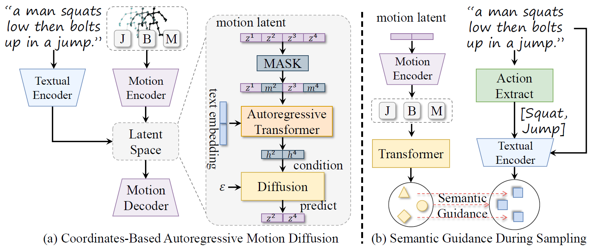
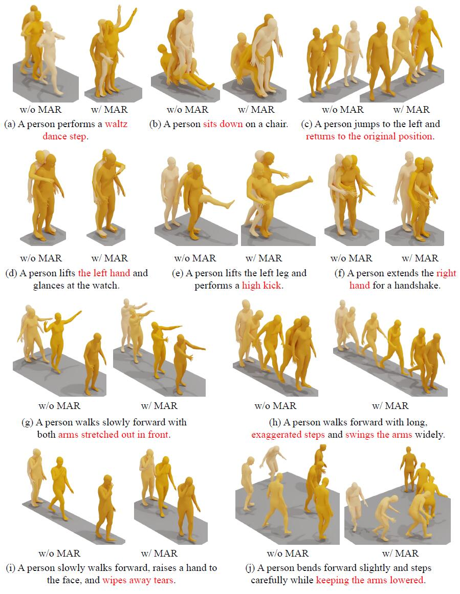

Joint, bone & motion
Encode absolute joint positions together with bone vectors and temporal displacements.
CoAMD · arXiv 2026
Southeast University · University of Macau · UOW College Hong Kong · HKUST
An action recognizer guides motion generation at every autoregressive step. Shared joint, bone, and motion representations connect generation, recognition, retrieval, and editing in one framework.
Human action recognition and motion generation are two active research problems in human-centric multimedia understanding and generation, both aiming to align motion with textual semantics. However, most existing works study these two problems separately, without uncovering the links between them, namely that motion generation benefits from explicit semantic comprehension. This work connects action recognition and motion generation by using skeleton coordinates as a shared representation for both motion understanding and generation. We propose Coordinates-Based Autoregressive Motion Diffusion (CoAMD), which synthesizes motion in a coarse-to-fine manner. As a core component of CoAMD, we design a Multi-Modal Action Recognizer (MAR) that provides gradient-based semantic guidance for motion generation. Furthermore, we establish a rigorous benchmark by retraining and evaluating baselines on absolute coordinates. Our model can be applied to four important tasks, including skeleton-based action recognition, text-to-motion generation, text–motion retrieval, and motion editing. Extensive experiments across these tasks demonstrate that our approach achieves state-of-the-art performance, highlighting its effectiveness and versatility for human motion modeling.
Absolute skeleton coordinates provide a shared foundation for motion understanding and generation.

Encode absolute joint positions together with bone vectors and temporal displacements.
Predict masked latent tokens conditioned on the text prompt and visible motion context.
Decode the motion and use the gradient of MAR's semantic alignment score to refine the current tokens.
Side-by-side comparisons with MARDM (left) and CoAMD (right). Each video shows the input text prompt.

Generation, recognition, retrieval, and editing share the same absolute-coordinate motion representation.
Text-to-motion generation
HumanML3D results. Baselines are evaluated using absolute joint coordinates; generation metrics are averaged over 20 runs.
Skeleton-based action recognition
Recognition accuracy (%) on HumanML3D with J+B+M inputs.
Text–motion retrieval
Recall (%) on HumanML3D using the batch-based retrieval protocol.
Temporal motion editing
CoAMD supports temporal inpainting, outpainting, prefix generation, and suffix generation.
↑ Higher is better. ↓ Lower is better. Open any table to view the full-resolution image.
If you find this work useful, please cite the arXiv paper.
@misc{kuang2026marryingtexttomotiongenerationskeletonbased,
title = {Marrying Text-to-Motion Generation with Skeleton-Based Action Recognition},
author = {Jidong Kuang and Hongsong Wang and Jie Gui},
year = {2026},
eprint = {2604.17090},
archivePrefix = {arXiv},
primaryClass = {cs.CV},
url = {https://arxiv.org/abs/2604.17090}
}